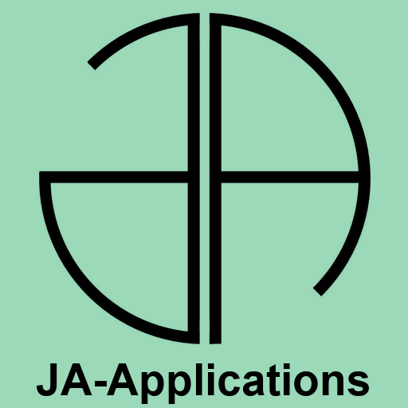

Première observation
Chargement de la clé…
Vous pouvez revenir en arrière à tout moment : les réponses non certaines ne doivent pas servir à exclure une possibilité.

Première observation
Vous pouvez revenir en arrière à tout moment : les réponses non certaines ne doivent pas servir à exclure une possibilité.